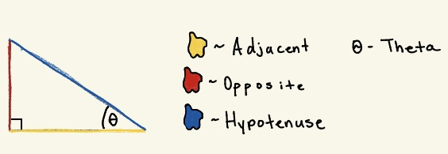

Lessons
These lessons break trigonometry down into simple, beginner-friendly pieces.
1. Understanding Right Triangles
Before we use trig, we need to understand the basic parts of a right triangle.
You will learn:
- What the **hypotenuse** is
- What the **opposite** and **adjacent** sides mean
- How to identify these sides based on the angle you're looking at

2. Introduction to SOH-CAH-TOA
SOH-CAH-TOA is a simple way to remember the three main trig ratios:
- Sine = Opposite / Hypotenuse
- Cosine = Adjacent / Hypotenuse
- Tangent = Opposite / Adjacent
You'll learn how to identify which ratio to use and how to plug in the sides correctly.

3. Using Trig Ratios to Find Missing Sides
Now that you know the ratios, it's time to use them. In this lesson you'll practice:
- Setting up correct trig equations
- Solving for missing sides using multiplication or division
- Using the proper ratio based on what the question gives you

Fun Example: The Dinosaur at the DMV 🦖
Dino goes to the DMV to renew his license, but there's a problem…
They need to verify his height and—surprise—he forgot it.
Luckily, Dino remembers he can use trigonometry to figure it out.
He stands exactly 25 feet away from the height-measuring wall and uses his phone’s camera to measure the
angle of elevation to the top of his head.
The angle reads: 58°.
To solve this, we can use the tangent ratio:
tan(58°) = height / 25
height = 25 × tan(58°)
Once calculated, this gives Dino’s height (and now the DMV lady is impressed).

4. Using Inverse Trig to Find Angles
When you know the sides but not the angle, you use inverse trig:
- sin⁻¹ (inverse sine)
- cos⁻¹ (inverse cosine)
- tan⁻¹ (inverse tangent)
This lesson shows you how to calculate angles using a calculator
and how to round answers correctly.

5. (Optional) Introduction to the Unit Circle
If you want to go beyond basic trig, you can introduce the unit circle here.
Cover:
- Angles in radians and degrees
- Coordinates of key angles
- How the unit circle connects to sine and cosine values